Partes de nieve · Oeste de EE. UU.
Partes de nieve diarios para esquiadores: dónde está la nieve, qué llega y dónde esquiar, a partir del mapa de nieve de SnowScope y de las estaciones de medida. Cada cifra sale de los datos del día.


Beaver Mountain ofrece entradas de precio fijo a 75 dólares sin recargo en días de mayor afluencia. Principios de diciembre suele tener nieve escasa; apunta a mediados de mes o más tarde cuando la nieve es más fiable.
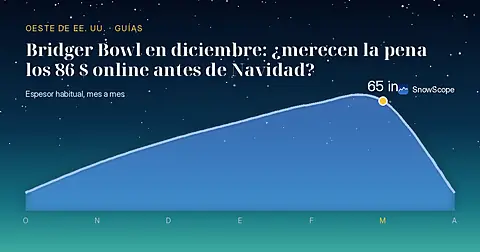
Bridger Bowl cobra $86 en línea para 2026/27. A media montaña hay 50 cm el 15 de diciembre en la mitad de los inviernos; la semana de Navidad mejora las probabilidades a 78 %.
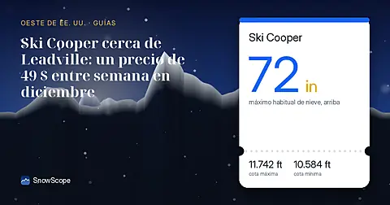
Ski Cooper mantiene su precio de adulto entre semana en 49 $ para 2026-27 (99 $ los fines de semana). A media montaña suele haber 26 in (66 cm) de nieve el 15 de diciembre, el 70 % de los inviernos por encima de 20 in.

Sunlight cerca de Glenwood Springs afronta una apuesta de temporada temprana en diciembre. A mediados de mes puedes esperar 26 in (67 cm) a media montaña, aunque solo el 72% de los inviernos alcanzan esa profundidad.
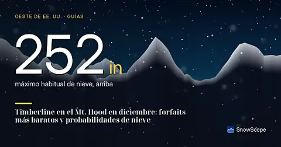
Timberline a media montaña tiene 132 cm de nieve típica el 15 de diciembre. Las laderas superiores alcanzan 147 cm. Las entradas de día completo salen desde 129 $ en temporada baja.


Para un viaje en diciembre, ¿vale la pena el Indy Pass de $419? Revisamos siete estaciones asociadas y sus probabilidades de nieve: el abono te sale rentable a partir de la tercera estación.
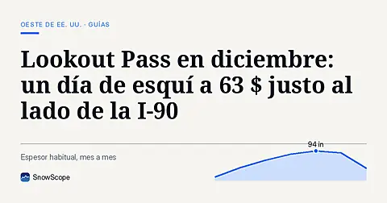
El forfait entre semana de Lookout Pass cuesta 63 $ reservado con antelación. A mediados de diciembre, la parte alta de la montaña suele tener 30-37 cm (75-95 cm). Datos del 13 de noviembre de 2026.

Los tickets de adulto 2026/27 de Montana Snowbowl son de 78 $ entre semana y 85 $ el fin de semana. A media montaña hubo 20 in (50 cm) para el 15 de diciembre en el 83 % de nuestros inviernos pasados.

El 3-Pack de Schweitzer ofrece tres días por 249 dólares en una cresta que sube de 4010 ft a 6390 ft. La nieve a media montaña el 15 de diciembre tiene un promedio de 90 cm, con un 85 % de inviernos por encima de 50 cm.

Brighton lidera en principios de diciembre con 37 in (94 cm) de nieve típica el 15. Wolf Creek se pone al día para Navidad. Precios y fiabilidad comparados.

Brundage Mountain ofrece nieve fiable a principios de temporada cerca de McCall, Idaho. La profundidad típica a media montaña alcanza 77 cm a mediados de diciembre, con forfaits desde 65 $ en días seleccionados.

Snow King está al pie de Jackson. A mediados de diciembre, la media montaña suele tener 71 cm. Datos de 13 de noviembre de 2026.

Loveland vende entradas online de 60 € hasta el 13 de diciembre, luego 159 € a partir del 14 de diciembre. El promedio de nieve de principios de diciembre es de 20 cm a media montaña, pero la base tiene la mitad de profundidad que a mediados de invierno.
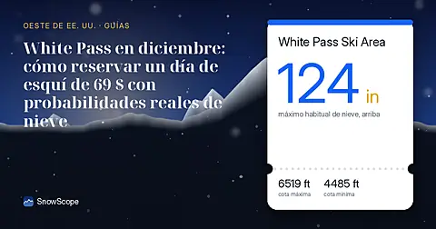
White Pass recompensa las reservas anticipadas entre semana. A mediados de diciembre, la media montaña acumula 102 cm en un año típico. Datos del 13 de noviembre de 2026.

Wolf Creek tiene 87 cm a media montaña el 15 de diciembre típico. Los precios máximos comienzan el 20 de diciembre. Datos: 13 de noviembre de 2026.

Brighton a media montaña típicamente acumula 94 cm el 15 de diciembre. Datos al 13 de noviembre de 2026.

16 estaciones estadounidenses clasificadas por probabilidad de nieve el 15 de diciembre y precio del forfait de día completo para adultos. Grand Targhee lidera con un 100 % de probabilidad; cinco estaciones combinan más del 80 % de probabilidad con forfaits menores de 80 $. Datos del 13 de noviembre de 2026.

Grand Targhee ofrece nieve fiable en diciembre a todas las altitudes. A media montaña, 118 cm es típico a mediados de diciembre, y el 100% de los inviernos alcanzan 50 cm o más. Datos del 13 de noviembre de 2026.

Mt. Baker en diciembre: 46 in (116 cm) de nieve a media montaña en un 15 de diciembre típico, y un forfait de 98,80 $ de lunes a jueves, que solo se vende el mismo día en taquilla.

La nieve empieza hacia los 10,200 pies (3,100 m). Qué es el NDSI y cómo se separa la nieve de las nubes.
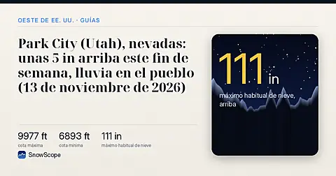
Previsión de nevadas en Park City (Utah) el 13 de noviembre de 2026: casi sin nieve en el suelo ahora mismo, unas 5 in cerca de la cima con el temporal del fin de semana y una cota de nieve de 7,400 a 7,700 ft, lluvia en la base y unas 12 in arriba en la semana.


Una tormenta el 4 de noviembre dejó de 8 a 13 inches de nieve nueva en cinco estaciones altas de Colorado cerca de Aspen. Cinco días después, la mitad había desaparecido. Qué significa esto para los días de powder.

Perspectiva estacional para las Rocosas: diciembre más cálido, nieve cerca de lo normal, pero el norte tiende a ser más escaso mientras Colorado y Utah siguen sin decidirse. Datos del 10 de noviembre de 2026.

Vail en cifras: un pico habitual de unas 64 in (162 cm) a media montaña en 46 inviernos pasados, marzo el mes más nevado, más terreno, acceso y seguridad.
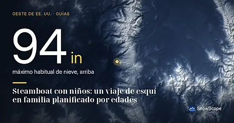
Steamboat, Colorado, en familia: qué funciona para los más pequeños, los niños, los adolescentes y los padres, con la nieve de 46 inviernos pasados a tres alturas.

Cómo pasar el primer día en Park City Mountain, Utah, y cuándo ir: nuestro histórico da unas 71 in (180 cm) de pico habitual a media montaña en 46 inviernos pasados.

Mt Baker, Washington: unas 133 in (337 cm) de pico habitual a media montaña en 46 inviernos pasados, un récord mundial de nieve y ningún alojamiento a pie de pista.
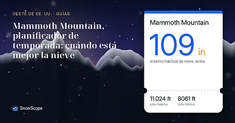
Planifica Mammoth Mountain por temporada: unas 93 in (235 cm) de pico habitual a media montaña en 46 inviernos pasados, marzo el más nevado, primaveras largas e inviernos variables.

Los mitos sobre Jackson Hole frente a los hechos y nuestro histórico: unas 80 in (204 cm) de pico habitual a media montaña en 46 inviernos pasados, sin un descenso claro.
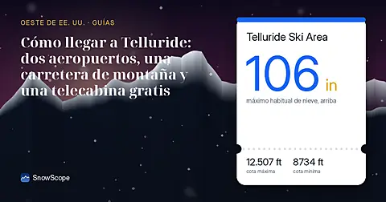
Llegar a Telluride en invierno, aeropuerto por aeropuerto: Telluride Regional, Montrose, la carretera 145 con la ley de tracción de Colorado y la telecabina gratuita a Mountain Village.
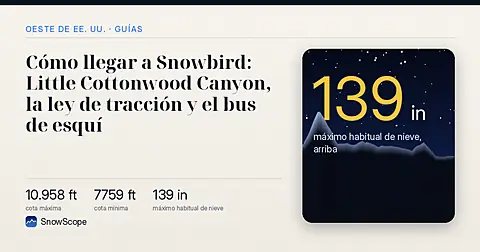
Snowbird se encuentra al final de Little Cottonwood Canyon. Te explicamos la norma de tracción, el estado de la carretera, el autobús de esquiadores, y por qué el viaje influye en la profundidad de nieve.
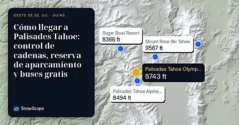
Palisades Tahoe Olympic Valley está a 42 millas de Reno. El acceso invernal depende de los controles de cadenas, las reservas de aparcamiento y conocer el pronóstico. Datos del 8 de noviembre de 2026.

Big Sky, Montana, fácil de imaginar: 5850 acres bajo el Lone Peak, y una nieve unas cinco veces más gruesa cerca de la cima que en la base en 46 inviernos pasados.

Aspen Snowmass comparado: Snowmass tiene unas 75 in (190 cm) de pico habitual a media montaña en 46 inviernos pasados, Aspen Mountain unas 69 in (174 cm).

Unas 109 in (276 cm) es el pico habitual de Alta a media montaña en 46 inviernos pasados. Aquí: por qué el snowboard se queda en casa, los mejores meses y cómo subir el cañón.